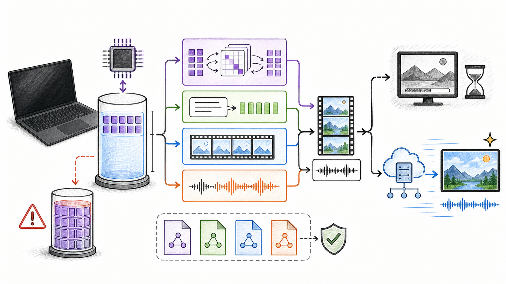

02한국 로컬 가중치는 현재 라이선스 제외 지역이므로 Comfy H3 API Partner Node가 기본값입니다.
03허가 후 128GB에는 42.47GB Comfy 조합이 들어가지만, full attention 때문에 생성은 시간 단위일 수 있습니다.
모델 파일이 메모리에 들어가는지만 보지 않았습니다. 한국에서의 라이선스, H3의 실제 네 모듈, 2K가 가능한 경로, 공개 Apple Silicon 실측, ComfyUI 클릭 순서와 오류 해결까지 한 번에 정리했습니다.
260804 · 표준 심층2026.08.04 KST공식·1차·커뮤니티 실측 15건 · 기준일 2026.08.04
TWO VISUAL SUMMARY SHEETS
도표·인포그래픽 요약 장표 2장
DECISION · 1 / 2
한국에서는 로컬보다 API가 먼저입니다
01
공식 H3 T2VA 샘플 · 1344×768 · MiniMax 모델 카드
대한민국 로컬 가중치 라이선스 제외 지역 별도 허가 전에는 Comfy API Partner Node가 현실적 기본값
권장
ComfyUI H3 API 모델 다운로드 없음 · 2K
허가 후 실험
Comfy 로컬 42.47GB 5초·0.4MP부터
33BH3 dense 영상·오디오 확산 Transformer
42.47GBComfy 기본 4개 파일 합계·피크 메모리 아님
1.2시간M3 Ultra·5초·8단계 커뮤니티 MLX 실측
M5 Max 128GB 실측은 없고, 기본 INT8 ConvRot의 MPS 미구현 오류도 공개돼 있습니다. “파일이 들어간다”와 “실행된다”는 다른 판단입니다.
COMFYUI START · 2 / 2
비전공자용 7단계 실행 순서
02

① 설치Comfy Desktop
② 업데이트최신 안정판
③ 템플릿Partner Nodes
④ MiniMax H3T2V부터
⑤ 로그인Comfy 계정
⑥ 5초프롬프트 입력
⑦ QueueMP4 검수
첫 실행Text to Video · 5초 · 16:9 · 장면＋카메라＋대사/효과음/음악을 한 블록에 작성
하지 말 것한국에서 허가 없이 로컬 가중치 사용 · API 키를 워크플로 JSON이나 임의 custom node에 직접 저장
실제 H3 출력 예시 · 공식 MiniMaxAI 모델 카드 T2VA 샘플에서 2초 지점 프레임 추출 · 1344×768 · 원본 영상 · 품질 대표 표본이지 M5 Max 로컬 결과가 아닙니다.공식 배너 · MiniMaxAI 모델 카드 자산 · 상표는 권리자에게 있으며 본 보고서는 독립 분석입니다.대상 하드웨어 실제 제품사진 · M5 Pro 또는 M5 Max 탑재 MacBook Pro · Apple Newsroom · 본 보고서는 Apple의 승인·후원·제휴를 받지 않았습니다.AI 생성 인포그래픽 · 공식 제품 이미지 아님AI 생성 인포그래픽 · 공식 제품 이미지 아님 · 검증 수치는 HTML 표에 분리
최적 경로 한눈에 보기
합법성·난이도·2K·속도를 함께 고려한 결론입니다.
한 문장 결론
Jeremy의 대한민국 사용 환경에서는 ComfyUI의 MiniMax H3 API Partner Node가 최적 기본값입니다. H3 로컬 가중치 라이선스는 대한민국을 제외 지역으로 명시하고, 공식 FAQ는 API를 글로벌 이용 경로로 구분합니다.[3][4][7]
먼저 바로잡을 점
MiniMax H3는 챗봇이나 로컬 LLM이 아닙니다. 33B dense H3-Omni-Transformer가 영상과 스테레오 오디오 latent를 함께 생성하고, Qwen3-VL-32B encoder와 영상·오디오 VAE가 조건과 결과를 처리하는 영상＋음성 확산 시스템입니다.[2]
공개 가중치만으로는 H3-Base의 768p 경로를 실행합니다. 공식 2K 품질은 비공개 H3-Context-IR과 H3-Regenerate-2K를 포함한 API 경로가 필요합니다.[2][5]
최적의 의미한국에서의 합법성, 비전공자 난이도, 2K 품질, 생성시간, 128GB 메모리 적합도를 함께 평가했습니다. 단순히 가장 큰 파일을 메모리에 올리는 경쟁이 아닙니다.
모델 조합별 128GB 적합도
파일 합계, 실행 여유, 품질과 한국 사용 조건을 분리했습니다.
구성
가중치 파일 합계
128GB 적합도
품질·속도
한국 사용 판정
Comfy H3 API Partner Node 종합 1위
로컬 다운로드 없음
매우 편안함 Mac 메모리 거의 무관
MiniMax 서버·2K·5–15초 초당 Comfy API 과금
권장 공식 FAQ상 API 글로벌 이용
Comfy 공식 로컬 기본 pruned INT8 DiT＋NVFP4 text＋2 VAE
42.47GB 39.55GiB 상당
파일 기준 편안함 실제 피크 별도
MPS aten::_int_mm 미구현 공개 이슈
별도 허가 후에도 실험 API/Cloud 우선
MLX 8-bit DiT＋upstream encoder/VAE
DiT 35.3GB 상주 DiT 21.5GB
구조 최적화 후 적재 가능성 높음
8-bit 양자 오차 최소 ComfyUI GUI 경로 아님
별도 허가 후 연구용
MLX 6-bit DiT＋upstream encoder/VAE
DiT 30.3GB 상주 DiT 16.5GB
128GB 균형
M3 Ultra 5초·8단계 1.2시간 품질/크기 균형
별도 허가 후 연구용
Comfy INT8 DiT＋BF16 text＋2 VAE
91.36GB 85.08GiB 상당
명목 여유 42.92GiB 피크 미확인
고품질 후보지만 MPS 실측 없음
별도 허가 후 실험
Comfy BF16 DiT＋INT8 text＋2 VAE
99.23GB 92.42GiB 상당
명목 여유 35.58GiB 활성값 여유 제한
DiT 품질 우선 후보 MPS 실측 없음
별도 허가 후 전용 세션
Comfy BF16 DiT＋BF16 text＋2 VAE
123.60GB 115.11GiB 상당
명목 여유 12.89GiB OS·활성값에 부족
파일 합계만 들어가도 안정 실행 보장 없음
비권장
합계는 Comfy-Org 저장소의 실제 파일 크기 합계이며 실행 피크가 아닙니다. 128GB는 macOS가 GiB로 표시하는 명목 메모리 기준 비교이고, 프레임·해상도·attention 활성값·offload·Metal 버퍼는 추가로 변합니다.[8]
목적별 최적 조합
API, 허가 후 로컬 GUI, MLX 실험, 하이브리드를 구분합니다.
한국 · 기본
Comfy H3 API
로컬 모델 없이 2K. 로그인 후 템플릿으로 시작합니다. 가장 쉬우며 라이선스 경로도 명확합니다.
허가 후 · GUI
Comfy pruned INT8
42.47GB starter set. T2V/I2V만 먼저 설치하고 R2V 모델은 나중에 추가합니다.
허가 후 · Apple 최적화
MLX 6-bit
메모리 균형은 좋지만 생성이 시간 단위입니다. ComfyUI가 아니라 터미널 실험 경로입니다.
품질 우선
API 2K + 로컬 편집
생성은 API, 자막·편집·업스케일·합성은 Mac에서 처리하는 하이브리드가 현실적입니다.
최종 권고: API로 T2V 5초를 먼저 검증하고, I2V → R2V 순서로 확장하십시오. 로컬은 MiniMax의 별도 허가와 M5 Max 실제 벤치마크를 확보한 뒤 연구용으로 판단합니다.
가장 먼저 확인할 것: 한국은 로컬 가중치 제외 지역입니다
성능보다 먼저 적용되는 법적 조건입니다.
현재 커뮤니티 라이선스로 대한민국에서 로컬 실행은 허가되지 않습니다
라이선스는 EU·영국·대한민국·미국을 Excluded Territories로 열거하고, 해당 지역에서 가중치·파생물과 출력의 사용·실행·표시를 허가하지 않습니다. 별도 정식 라이선스를 신청할 수 있으며, 공식 FAQ는 API를 글로벌 이용 경로로 구분합니다.[3][4]
따라서 이 보고서의 로컬 조합은 “별도 허가를 받은 뒤의 기술 적합성” 분석입니다. 법률 자문은 아니며, 실제 사용 전 MiniMax의 최신 라이선스와 허가 문서를 다시 확인해야 합니다.
H3는 네 덩어리가 함께 움직이는 영상·음성 시스템입니다
“33B 모델 하나”만 다운로드해서 실행할 수 없습니다.
조건 이해
Qwen3-VL-32B Encoder
50번째 layer의 hidden state를 사용합니다. Comfy 기본 NVFP4 파일은 15.687GB, BF16은 51.506GB입니다.
생성 핵심
H3 Omni Transformer · 33B
영상과 오디오 latent를 같은 packed sequence에서 예측합니다. 13B AdaLN branch는 사전 계산·prune이 가능합니다.[2][9][10]
영상 복원
Video VAE · 5.208GB FP16
공간 16×·시간 4× 압축 후 영상으로 복원합니다. 고해상도에서 tiling이 필요합니다.
음성 복원
Audio VAE · 0.605GB FP32
32kHz 스테레오를 40Hz latent로 처리해 대사·효과음·음악을 영상과 함께 출력합니다.
최초 공개 버전은 sparse attention 코드가 빠져 full attention만 제공합니다. 길이와 해상도가 커질수록 메모리보다 계산량이 급격히 커집니다.[2][10]
128GB에 맞는 파일 조합과 실제 여유
그래프는 파일 합계를 GiB로 환산한 값이며, 실행 피크는 별도입니다.
Comfy 기본
39.55GiB
INT8＋INT8
62.39GiB
INT8 DiT＋BF16 text
85.08GiB
BF16 DiT＋INT8 text
92.42GiB
BF16＋BF16
115.11GiB
저장공간 전략
T2V와 I2V는 같은 FL2VA diffusion model을 쓰므로 starter set은 42.47GB입니다. R2V를 추가할 때 별도 Ref2VA pruned INT8 20.97GB가 더 필요해 총 저장 파일이 약 63.44GB가 됩니다. 원본 공식 저장소 전체를 무작정 받으면 중복 체크포인트 때문에 약 498GB 규모입니다.[2][8]
적재보다 더 큰 문제는 생성시간입니다
M5 Max 직접 실측이 없어 타기기 수치를 그대로 약속하지 않았습니다.
근거 장비·경로
조건
실측
해석
M3 Ultra 550GB · MLX BF16
1344×768 · 5초 · 1 denoise step
531.6초 · 8.86분
8단계 약 1.2시간, 16단계 약 2.3시간
M3 Ultra 512GiB · PyTorch MPS
512×256 · 124프레임 · 27 forward
모델 tensor 약 134.1GiB
공식 BF16은 128GB M5 Max에 부적합
M5 Max 128GB
614GB/s · 40코어 GPU
H3 직접 실측 없음
M3 Ultra 수치를 비례 환산하지 않음
MLX 측정은 H3의 full attention이 tens of thousands packed rows를 처리하면서 compute-bound가 된다는 것을 보여줍니다. 4-bit로 줄여도 attention FLOP가 사라지지 않아 전체 가속은 약 1.2–1.4배 추정에 그칩니다.[10][11][12]
비전공자를 위한 ComfyUI API 사용법
한국에서 가장 쉬운 실제 실행 경로입니다.
Comfy Desktop 설치
공식 Download에서 macOS Apple Silicon 버전을 설치합니다. 공식 요구사항은 macOS 13 이상, Apple Silicon M1 이상입니다.[14]
최신 버전으로 업데이트
Comfy Desktop 설정에서 Update를 실행하고 다시 시작합니다. H3 템플릿이 보이지 않으면 대부분 버전이 오래된 경우입니다.
Workflow Templates 열기
상단 Templates → Partner Nodes → MiniMax → MiniMax H3 API로 이동합니다. 처음에는 Text to Video를 선택합니다.[7]
Comfy 계정 로그인
Partner Node 안내에 따라 Comfy 계정으로 로그인합니다. API 경로는 초당 Comfy API 계정에 과금됩니다. 키를 워크플로 JSON에 직접 붙여 넣지 않습니다.
Queue/Run을 눌러 작업을 전송합니다. 진행 상태가 queued → running → completed로 바뀔 때까지 창을 닫지 않습니다.
MP4를 재생해 검수
영상·32kHz 스테레오 음성, 대사 동기화, 인물 손·입, 글자, 프레임 전환을 직접 확인합니다. 만족할 때만 8–15초나 R2V로 확장합니다.
T2V → I2V → R2V 순서가 가장 쉽습니다
복잡한 입력을 한 번에 쓰지 말고 작은 성공에서 확장합니다.
1단계
T2V · Text to Video
텍스트만으로 영상＋소리를 만듭니다. 첫 성공 확인용입니다.
프롬프트 뼈대: 장소 → 인물 → 행동 → 카메라 → 조명 → 대사 → 효과음 → 음악.
2단계
I2V/FL2V · 첫/마지막 프레임
첫 이미지와 선택적 마지막 이미지를 넣습니다. 두 이미지 비율을 같게 하고 그 사이의 움직임과 소리를 적습니다.
3단계
R2V · Reference to Video
이미지 최대 9개, 비디오 3개, 오디오 3개를 역할별로 연결할 수 있습니다. 각 reference에 identity·style·motion·voice 중 하나의 일을 명시합니다.[2][7]
확장
2K API + Mac 후반작업
H3 생성 후 Final Cut·DaVinci·Comfy의 업스케일/합성 노드로 자막·색보정·컷 편집을 처리합니다.
별도 허가를 받은 경우의 로컬 Comfy 경로
아래는 기술 가이드이며 현재 한국 사용 허가를 대신하지 않습니다.
Apple Silicon 기본 INT8 경로에 미해결 위험이 있습니다
ComfyUI 0.30.0·48GB Apple Silicon에서 minimax_h3_fl2va_pruned_int8_convrot가 첫 sampling step에 aten::_int_mm MPS 미구현 오류로 중단된 공개 이슈가 열려 있습니다. 모든 Mac 불가를 뜻하지는 않지만, M5 Max 완주가 확인되기 전에는 구매·다운로드 계획의 blocker로 취급하십시오.[18]
공식 로컬 튜토리얼 기준입니다. Templates → Video → MiniMax H3에서 T2V를 선택합니다.
팝업으로 4개 모델 받기
처음에는 FL2VA 4개 파일만 받습니다. R2V 20.97GB checkpoint는 필요할 때 추가합니다.
Resolution 0.4MP
기본 16:9 864×480, multiple 32를 유지합니다. 검증 후 0.98MP ≈ 1344×768로 올립니다.[6][15]
Duration 5초
124프레임, 24fps 근처의 최소 작업으로 시작합니다. frame length는 17k+5 grid에 맞춰집니다.
첫 step 오류면 Cloud로 전환
aten::_int_mm ... not implemented for MPS가 나오면 해상도·메모리 문제가 아닙니다. 출처 불명 patch나 CUDA용 SageAttention을 넣지 말고 버전·칩·파일명·오류 전문을 기록한 뒤 API/Cloud로 전환합니다.[18]
공식 Comfy 튜토리얼은 Apple M5 Max·MPS의 end-to-end 성공과 속도를 제시하지 않습니다. ConvRot·NVFP4는 core에 구현됐지만 MPS 성공 보증은 아니며, 기준일 공개 이슈는 기본 INT8 sampler 실패를 보고합니다.[6][9][18]
자주 막히는 지점과 해결 순서
오류 메시지를 지우기보다 원인을 한 단계씩 분리합니다.
H3 템플릿이 안 보임
Comfy 업데이트 → 앱 완전 종료/재실행 → Templates 검색. Stable/Desktop 배포가 nightly보다 늦을 수 있습니다.
Missing Nodes
native H3는 임의 custom node가 아니라 최신 core에 포함됩니다. 오래된 버전에서 Manager로 유사 이름 노드를 설치하지 말고 먼저 공식 업데이트를 확인합니다.
Model not found
파일명과 세 폴더를 정확히 확인하고 Comfy를 재시작합니다. Finder에서 확장자가 이중으로 붙지 않았는지 봅니다.
aten::_int_mm MPS 오류
현재 기본 INT8 ConvRot의 미해결 공개 이슈입니다. fallback 환경변수나 출처 불명 patch를 만능 해법으로 쓰지 말고 API/Cloud로 전환합니다.[18]
메모리 부족·강제 종료
다른 AI 앱과 브라우저를 닫고 0.4MP·5초로 낮춥니다. 다만 _int_mm 오류는 메모리 부족과 별개입니다.
너무 오래 멈춘 것처럼 보임
Queue 상태와 터미널 로그에서 모델 로드/denoise를 구분합니다. H3 로컬은 한 step이 분 단위일 수 있습니다.
소리가 없음
Audio VAE와 CreateVideo/SaveVideo 연결을 확인하고 MP4 플레이어의 음소거와 오디오 트랙을 점검합니다.
보안·비용·저작권 체크리스트
가장 편한 경로도 검수 없이 안전해지지는 않습니다.
API 자격증명
Comfy 공식 로그인·Partner Node 저장소를 사용합니다. JSON, 프롬프트, 스크린샷, Git 저장소에 키를 남기지 않습니다.
Custom Node
custom node는 Python 코드를 실행합니다. H3 native/API 경로는 공식 core와 템플릿을 우선하고, 설치 전 저장소·maintainer·최근 commit을 확인합니다.
모델 파일
Comfy-Org 또는 MiniMaxAI 공식 저장소의 SafeTensors만 받고 파일명·revision을 기록합니다. 재업로드 mirror는 피합니다.
인물·음성·상표
본인 동의 없는 얼굴·목소리 복제, 저작권 자료, 선거·허위정보·사칭을 피하고 AI 생성 표기를 검토합니다. MiniMax AUP와 현지법을 함께 적용합니다.[3]
확인 한계
아직 확정할 수 없는 부분을 분리했습니다.
2026-08-04 현재 MiniMax H3는 출시 직후이며, M5 Max 128GB에서 Comfy native quant 조합을 실제 완주한 공개 벤치마크를 확인하지 못했습니다.
파일 크기 합계는 상주 피크·activation·Metal buffer·offload 정책과 같지 않습니다.
M3 Ultra 실측은 M5 Max 속도 보장치가 아닙니다. 메모리 대역폭, GPU core, 커널과 thermal 조건이 다릅니다.
Comfy API 가격은 계정·지역·시점에 따라 달라질 수 있어 확인되지 않은 금액을 만들지 않았습니다. 실행 전 Pricing 화면에서 초당 비용을 확인하십시오.
라이선스 해석은 법률 자문이 아닙니다. 한국 로컬 사용은 MiniMax의 별도 서면 허가를 받은 뒤 진행해야 합니다.
공식 2K는 공개 H3-Base만의 결과가 아니라 hosted Context-IR·Regenerate-2K가 결합된 시스템 결과입니다.
인터넷·언론 반응
X·Threads·블로그·커뮤니티·뉴스에서 실제로 확인한 의견을 긍정·우려·조건부 평가로 나눴습니다.
공식·빠른 통합
ComfyUI core PR
출시 직후 native H3 node와 pruned checkpoint, AWQ-style scale, INT8 fused 연산이 core에 병합됐습니다. 반응 28건은 기대를 보여주지만 Mac 성능 검증은 아닙니다.